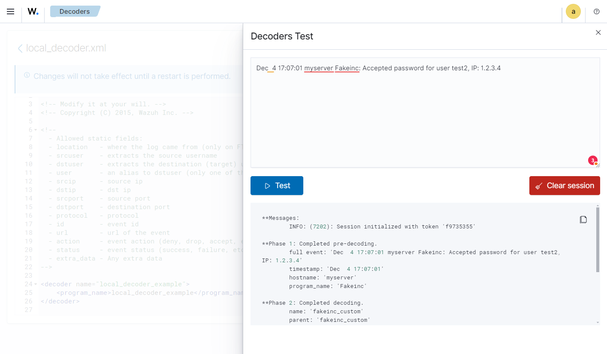
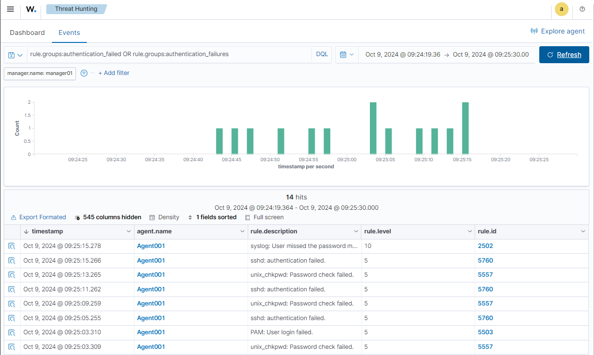
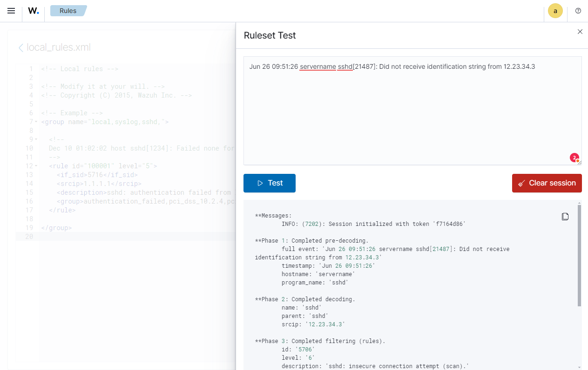
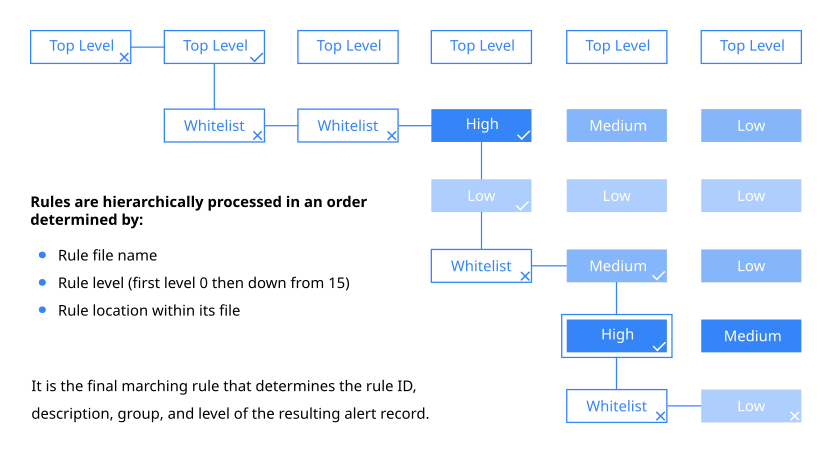

Session 3
Rules and Decoders
The Wazuh Ruleset
The Wazuh Ruleset consists of many pre-defined rules and decoders. Wazuh rules are the key component to configure and tune every alert that is generated by Wazuh, including those alerts generated for Integrity checking and alerts that were sent through standard syslog or rootkit detection alerts.
The pre-defined rules included with Wazuh are located in /var/ossec/ruleset/rules/ and their decoders are located in /var/ossec/ruleset/decoders/. Never edit rules or decoders in these locations as a Wazuh Ruleset update would overwrite your changes. The places to keep custom rules and decoders are /var/ossec/etc/rules/ and /var/ossec/etc/decoders/ respectively.
The Wazuh Decoders
What are decoders and what do they do?
Decoding is performed to extract relevant data from specific kinds of events. This is done in two parts – the pre-decoding and decoding phases.
Pre-decoding typically extracts static information from well-known fields such as those in syslog record headers. This usually includes the timestamp, hostname, and program name, These values are normally found in all syslog messages regardless of what application produced them.
During the decoding phase, more dynamic information will be extracted from an event, such as the source IP address, username, URL, etc… One or more decoders are specifically dedicated to extracting field data from each of many different applications and log sources. New custom decoders can also be written for logs that Wazuh does not know how to decode out of the box.
Once an event is decoded, Wazuh can then evaluate it against its ruleset to determine if an alert should be produced. Many of the Wazuh rules examine multiple decoded fields for specific patterns. Without decoding, Wazuh rules would be limited to looking for generic substrings and regex patterns appearing anywhere in log events, substantially weakening the quality of the alerts produced.
Main Decoder Options:
Option |
Description |
|---|---|
decoder |
This attribute defines the decoder. |
parent |
Decoder will be considered if the decoder specified here is matched. |
program_name |
Decoder will be considered if this is the predecoded value for program_name. |
prematch |
It will look for a match in the log. In case it does, the decoder will be used. |
regex |
The decoder will use this option to find fields of interest and extract them. |
order |
The values that regex will extract will be stored in these groups. |
fts |
Flags a field to keep track of the first time a value is seen. |
ftscomment |
Adds a comment to fts. |
plugin_decoder |
Specifies a built-in plugin to be used |
use_own_name |
Only for child decoders. |
json_null_field |
Adds the option of deciding how a null value from a JSON will be stored. |
json_array_structure |
Adds the option of deciding how an array structure from a JSON will be stored. |
accumulate |
It allows tracking events over multiple log messages. |
var |
Defines variables that can be reused inside the same file. |
Predefined field names are one of the legacy OSSEC static field names:
location |
where the log came from (only on FTS) |
system_name |
name of agent |
srcuser |
extracts the source username |
dstuser |
extracts the destination (target) username |
user |
alias to dstuser (only one of the two can be used) |
srcip |
source ip |
dstip |
dst ip |
srcport |
source port |
dstport |
destination port |
protocol |
protocol |
id |
event id |
url |
url of the event |
action |
event action (deny, drop, accept, etc) |
status |
event status (success, failure, etc) |
data |
any data |
extra_data |
any extra data |
These fields can be used as in rule criteria, like this
<srcip>1.2.3.4</srcip>
Dynamic fields break out of this limited list of fields and can be whatever you want to call them.
To refer to them in rule criteria, use the <field> tag like this if you were checking a dynamic field named “favorite.color”:
<field name="favorite.color">blue</field>
When we choose to extract information from fields we often want to use regular expressions. In Wazuh, we have the following Regular Expression operators that helps us match and/or extract certain information from events:
\w -> A-Z, a-z, 0-9, '-', '@' characters
\d -> 0-9 characters
\s -> For spaces " "
\t -> For tabs.
\p -> ()*+,-.:;<=>?[]!"'#$%&|{} (punctuation characters)
\W -> For anything not \w
\D -> For anything not \d
\S -> For anything not \s
\. -> For anything
Other useful modifiers would be:
+ -> To match one or more times (eg \w+ or \d+)
* -> To match zero or more times (eg \w* or \p*)
^ -> To specify the beginning of the text.
$ -> To specify the end of the text.
| -> To create an "OR" between multiple patterns.
For more information, please see the Regular Expressions reference within the Wazuh documentation.
As of Wazuh 4.1, anywhere you could previously do some kind of text matching, like <regex> or <match> or specific
static or dynamic fields, you can now add an option to the tag like <regex type="pcre2"> which will allow you to use a full PCRE2 regex as explained in this section of the Wazuh documentation
You can similarly use this option with <regex> lines in decoders.
Also, for any rule matching, you also now have the option to negate the comparison with the negate option, like <match negate="yes">. For more information see the regex reference in Wazuh’s documentation.
Simple Decoder Example:
Let’s write a simple Decoder example for the following log event:
2016-04-29T10:01:04.600374-04:00 manager myprogram[9123]: test connection from 192.168.1.1 via test-protocol1
<decoder name="myprogram">
<program_name>myprogram</program_name>
<prematch>^test connection </prematch>
<regex offset="after_prematch">^from (\S+) via (\S+)$</regex>
<order>srcip, protocol</order>
</decoder>
In the above example we can see that we have set a distinctive name for the decoder “myprogram”, In our log event we also
see the name of the process that is logging this event “myprogram”, therefore we define it in the <program_name> option.
Next we want to extract the log message “test connection from 192.168.1.1 via test-protocol1”.
Lab Exercise 3A - Write a custom decoder
Write a custom decoder that extracts the result, username and source IP address from this log message:
Dec 4 17:07:01 myserver Fakeinc: Accepted password for user test2, IP: 1.2.3.4Lab Exercise Resolution
From the Hamburger menu ( ☰ ) go into the Server management section, select the Decoders option and then use the Custom Decoders button.
Click on the
local_decoder.xmlfile and append the new parent and child decoder:<decoder name="fakeinc_custom"> <program_name>Fakeinc</program_name> </decoder> <decoder name="fakeinc_custom_message"> <parent>fakeinc_custom</parent> <prematch> password for user </prematch> <regex>^(\w+) password for user (\w+), IP: (\S+)</regex> <order>result, user, srcip</order> </decoder>The decoder’s “name” is a mandatory field. It has a child decoder “fakeinc_custom_message” that refers to “fakeinc_custom” as its parent.
The parent decoder will match any event with a predecoded program name of “Fakeinc”.
The child decoder looks specifically among those Fakeinc logs for messages containing the phrase
password for userand then attempts to extract fields result, user, and srcip via regex. Other child decoders could be written that extract field data from other types of Fakeinc messages.Once we have finished our new decoder family, we will want to see if it actually works.
Click on Save, then on Decoders Test, paste the original log and click on Test

Success!! We can see our new decoder is working as expected! During the
**Phase 2: Completed decodingwe can see the user test2 and the source IP 1.2.3.4 address were successfully extractedFor more advanced details about Wazuh decoders, see this fine blog posting on the topic: https://documentation.wazuh.com/current/user-manual/ruleset/decoders/sibling-decoders.html
Alternatively this exercise can be done through the command line:
Log into the Wazuh manager in your lab environment.
Open the
/var/ossec/etc/decoders/local_decoder.xmlfile with your favorite text editor.Append our new parent and child decoder to the end
<decoder name="fakeinc_custom"> <program_name>Fakeinc</program_name> </decoder> <decoder name="fakeinc_custom_message"> <parent>fakeinc_custom</parent> <prematch> password for user </prematch> <regex>^(\w+) password for user (\w+), IP: (\S+)</regex> <order>result, user, srcip</order> </decoder>
Call
wazuh-logtestand paste in your log message (highlighted) to see if the new decoder is able to extract the information from it./var/ossec/bin/wazuh-logtestStarting wazuh-logtest v4.3.9 Type one log per line Dec 4 17:07:01 myserver Fakeinc: Accepted password for user test2, IP: 1.2.3.4 **Phase 1: Completed pre-decoding. full event: 'Dec 4 17:07:01 myserver Fakeinc: Accepted password for user test2, IP: 1.2.3.4' timestamp: 'Dec 4 17:07:01' hostname: 'myserver' program_name: 'Fakeinc' **Phase 2: Completed decoding. decoder: 'fakeinc_custom' result: 'Accepted' dstuser: 'test2' srcip: '1.2.3.4'You may also test logs by piping messages to the
wazuh-logtestutility:echo "Dec 4 17:07:01 myserver Fakeinc: Accepted password for user test2, IP: 1.2.3.4" | /var/ossec/bin/wazuh-logtestBy piping the messages to the utility you ensure everytime the command is run the ruleset is reloaded.
Next let’s write some custom rules in order to detect the event and alert on it…
Lab Exercise 3B - Write basic custom rules
Write a custom rule family that matches the following log messages and assign the appropriate alerts and levels:
Dec 4 17:07:01 myserver Fakeinc: Accepted password for user test2, IP: 1.2.3.4 Dec 4 17:07:01 myserver Fakeinc: Failed password for user test, IP: 1.2.3.4 Dec 4 17:07:01 myserver Fakeinc: Application is shutting down: Internal error Dec 4 17:07:01 myserver Fakeinc: DEBUG: Received OK.Lab Exercise Resolution
From the Hamburger menu ( ☰ ) go into the Server management section, select the Rules option, click the “Custom rules” button on the right and then click on
local_rules.xmlSince we have 4 log messages that very much look alike we only want to focus on the part of the log message that varies. We start by creating a “parent rule” that will always match, even when no other “child rule” is triggering.
Add the parent rule within a new group, looking like this:
<group name="fakeinc"> <rule id="100102" level="0"> <decoded_as>fakeinc_custom</decoded_as> <description>Parent rule for Fakeinc custom</description> </rule> </group>We set the rule ID to
100102, which is within the custom rule-ID range, and set the alert level to 0, because we don’t want any alerts for this rule when it triggers, but instead for its children to be considered for matching.Next we specify that for this rule to match the “fakeinc_custom” decoder must have matched in the decoding stage.
The last part of our rule is a description. This should be as meaningful and cohesive as possible, especially if you intend to submit the rule to the Wazuh-HIDS project. Then other people will better understand what this rule is meant to do.
Now, let’s add the following child rules to
local_rules.xmlwithin the fakeinc rule group we created previously for rule 100102:<rule id="100103" level="5"> <if_sid>100102</if_sid> <field name="result">Failed</field> <description>Fakeinc Custom: Failed password</description> <group>authentication_failed</group> </rule>We see the rule ID is sequential and similar to our parent rule ID, but the alert level has changed, we have increased it to 5 because the event “Failed password” is of greater importance to us.
In order to tell Wazuh that this rule should be considered if the parent rule matches we use the
<if_sid>tag with the id100102as a value.Next we see the tag
<field name="result">where we define the criteria to trigger this rule. Following this, we see the mandatory description message again.The following additional rules match other Fakeinc message types.
<rule id="100104" level="3"> <if_sid>100102</if_sid> <field name="result">Accepted</field> <description>Fakeinc Custom: Accepted password</description> </rule><rule id="100105" level="10"> <if_sid>100102</if_sid> <match>Internal error</match> <description>Fakeinc Custom: Internal error</description> </rule>Lastly we will write a composite rule that fires after multiple attempts of failed passwords. This time we use the atomic rule 100103 as our parent rule, as it already matches with failed password attempts. We want to raise the alert level even further to 10, to trigger after 5 attempts within a 1 minutes interval. We use the tag
<if_matched_sid>to reference to our new parent rule. The<same_source_ip />tag should restrict the attempts coming from the same IP address only.<rule id="100106" level="10" frequency="5" timeframe="60"> <if_matched_sid>100103</if_matched_sid> <same_source_ip /> <description>Fakeinc Custom: Multiple Failed passwords</description> <group>authentication_failures</group> </rule>Let’s see if our new defined rules work as expected.
3: Open the Ruleset Test tool, paste in individual log samples, clicking the Test button after each one to see if each new rule behaves as intended.
Dec 4 17:07:01 myserver Fakeinc: Accepted password for user test2, IP: 1.2.3.4**Phase 1: Completed pre-decoding. full event: 'Dec 4 17:07:01 myserver Fakeinc: Accepted password for user test2, IP: 1.2.3.4' timestamp: 'Dec 4 17:07:01' hostname: 'myserver' program_name: 'Fakeinc' **Phase 2: Completed decoding. name: 'fakeinc_custom' parent: 'fakeinc_custom' result: 'Accepted' dstuser: 'test2' srcip: '1.2.3.4' **Phase 3: Completed filtering (rules). id: '100104' level: '3' description: 'Fakeinc Custom: Accepted password' groups: '["fakeinc"]' firedtimes: '1' mail: 'false' **Alert to be generated.Dec 4 17:07:01 myserver Fakeinc: Failed password for user test, IP: 1.2.3.4**Phase 1: Completed pre-decoding. full event: 'Dec 4 17:07:01 myserver Fakeinc: Failed password for user test, IP: 1.2.3.4' timestamp: 'Dec 4 17:07:01' hostname: 'myserver' program_name: 'Fakeinc' **Phase 2: Completed decoding. name: 'fakeinc_custom' parent: 'fakeinc_custom' result: 'Failed' dstuser: 'test' srcip: '1.2.3.4' **Phase 3: Completed filtering (rules). id: '100103' level: '5' description: 'Fakeinc Custom: Failed password' groups: '["fakeincauthentication_failed"]' firedtimes: '1' mail: 'false' **Alert to be generated.Dec 4 17:07:01 myserver Fakeinc: Application is shutting down: Internal error**Phase 1: Completed pre-decoding. full event: 'Dec 4 17:07:01 myserver Fakeinc: Application is shutting down: Internal error' timestamp: 'Dec 4 17:07:01' hostname: 'myserver' program_name: 'Fakeinc' log: 'Application is shutting down: Internal error' **Phase 2: Completed decoding. decoder: 'fakeinc_custom' **Phase 3: Completed filtering (rules). Rule id: '100105' Level: '10' Description: 'Fakeinc Custom: Internal error' **Alert to be generated.Dec 4 17:07:01 myserver Fakeinc: DEBUG: Received OK.**Phase 1: Completed pre-decoding. full event: 'Dec 4 17:07:01 myserver Fakeinc: DEBUG: Received OK.' timestamp: 'Dec 4 17:07:01' hostname: 'myserver' program_name: 'Fakeinc' log: 'DEBUG: Received OK.' **Phase 2: Completed decoding. decoder: 'fakeinc_custom' **Phase 3: Completed filtering (rules). Rule id: '100102' Level: '0' Description: 'Parent rule for Fakeinc custom'We can see that the last log message didn’t generate an alert, because the parent rule with the alert level 0 fired. The alert level 0 doesn’t generate any alerts!
Lastly, paste five repetitions of the failed password log into the Ruleset Test window and then click the Test button.
Dec 4 17:07:01 myserver Fakeinc: Failed password for user test, IP: 1.2.3.4 Dec 4 17:07:02 myserver Fakeinc: Failed password for user test, IP: 1.2.3.4 Dec 4 17:07:03 myserver Fakeinc: Failed password for user test, IP: 1.2.3.4 Dec 4 17:07:04 myserver Fakeinc: Failed password for user test, IP: 1.2.3.4 Dec 4 17:07:05 myserver Fakeinc: Failed password for user test, IP: 1.2.3.4The tool will provide the analysis for each line of the log and on the 5th and final time, instead of triggering rule
100103, the composite rule100106will fire.The Ruleset test is a powerful tool and helps immensely when writing new rules and decoders as it indicates when an error occurs.
Lab Exercise 3C - Write a more advanced custom rule
Now want Wazuh to alert when the server finance is accessed outside of office hours by the user Rob.
Lab Exercise Resolution
Log into the Wazuh manager in your lab environment.
Search for the rule that we are going to base our rule on, the already existing SSHD rule with the ID
5715, which is triggered when an SSH connection is accepted.See the original SSHD rule below, which is in
0095-sshd_rules.xmlfile. Do not copy this rule intolocal_rules.xml. It is part of the stock Wazuh ruleset.<rule id="5715" level="3"> <if_sid>5700</if_sid> <match>^Accepted|authenticated.$</match> <description>sshd: authentication success.</description> <mitre> <id>T1078</id> <id>T1021</id> </mitre> <group>authentication_success,gdpr_IV_32.2,gpg13_7.1,gpg13_7.2,hipaa_164.312.b,nist_800_53_AU.14,nist_800_53_AC.7,pci_dss_10.2.5,tsc_CC6.8,tsc_CC7.2,tsc_CC7.3,</group> </rule>Below is our new custom rule that should alert when the user Rob logs into the machine finance only in a specific time window.
Add this rule to the
local_rules.xmland the rule’s time range to include the current time of the manager.The timestamp in the text of the event itself is not compared to the
<time>criteria at all, only the manager’s local system time at the moment the event is being analyzed.The manager machine in our lab is using UTC time. You may determine the manager’s current time by executing
date.<rule id="100110" level="12"> <if_sid>5715</if_sid> <time>3pm - 10am</time> <user>Rob</user> <hostname>finance</hostname> <description>Accessing critical machine 'finance' outside of regular business hours.</description> <group>policy_violation,login_time</group> </rule>Test this rule with the Ruleset Test utility and the following event:
Apr 18 19:02:01 finance sshd[21488]: Accepted publickey for Rob from 1.2.3.4 port 33030 ssh2: RSA a6:4a:d4:6a:24:25:df:3c:2d:fd:8d:41:f1:d1:84:34Rule
100110should match now.References:
https://documentation.wazuh.com/current/user-manual/ruleset/index.html
Lab Exercise 3D - Wazuh’s Dynamic JSON Decoder
Suricata is an open source NIDS solution similar to Snort, and can be quickly deployed either on dedicated hardware for monitoring one or more transit points on your network, or directly on existing *nix hosts to monitor just their own network traffic. Because Suricata is capable of generating JSON logs of NIDS events, it integrates beautifully with Wazuh which is capable of dynamically decoding JSON records.
Set up Suricata on
linux-agentsystemAs root, install Suricata and its dependencies, along with the Emerging Threats Open ruleset. Copy and paste each of the following blocks into your terminal separately:
sudo su - cd /root add-apt-repository -y ppa:oisf/suricata-stableapt-get update apt install suricata -ywget https://rules.emergingthreats.net/open/suricata-6.0/emerging.rules.tar.gz tar zxvf emerging.rules.tar.gz rm /etc/suricata/rules/* -f mkdir /etc/suricata/rules mv rules/*.rules /etc/suricata/rules/ mv /var/tmp/suricata.yaml /etc/suricata/suricata.yaml IFACE=`route -n | grep "^0\.0\.0\.0" | awk '{print $8}'` sed -i "s/interface: .*/interface: "$IFACE"/g" /etc/suricata/suricata.yaml sed -i 's/RUN=no/RUN=yes/' /etc/default/suricata systemctl daemon-reload; systemctl enable suricata; systemctl restart suricataTrigger a NIDS alert on agent and see the output
Generate a specific web request known to trip NIDS rules:
dig a 3wzn5p2yiumh7akj.onion @8.8.8.8Look at the latest alert in both the standard Suricata alert log and also in the JSON alert log.
grep Trojan /var/log/suricata/fast.log | tail -1Observe that the standard log is fairly simple with limited information.
06/09/2022-10:20:24.825361 [**] [1:2022048:3] ET MALWARE Cryptowall .onion Proxy Domain [**] [Classification: A Network Trojan was detected] [Priority: 1] {UDP} 10.0.1.85:44485 -> 10.0.0.2:53See how much more data is provided in the JSON output, and how field names are provided.
grep Trojan /var/log/suricata/eve.json | tail -1 | jq{ "timestamp": "2022-06-09T10:20:24.825361+0000", "flow_id": 1816126005219691, "in_iface": "eth0", "event_type": "alert", "src_ip": "10.0.1.85", "src_port": 44485, "dest_ip": "10.0.0.2", "dest_port": 53, "proto": "UDP", "tx_id": 6, "alert": { "action": "allowed", "gid": 1, "signature_id": 2022048, "rev": 3, "signature": "ET MALWARE Cryptowall .onion Proxy Domain", "category": "A Network Trojan was detected", "severity": 1, "metadata": { "created_at": [ "2015_11_09" ], "updated_at": [ "2020_08_18" ] } }, "dns": { "query": [ { "type": "query", "id": 1041, "rrname": "3wzn5p2yiumh7akj.onion", "rrtype": "A", "tx_id": 6 } ] }, "app_proto": "dns", "flow": { "pkts_toserver": 4, "pkts_toclient": 3, "bytes_toserver": 350, "bytes_toclient": 445, "start": "2022-06-09T10:20:24.823659+0000" } }Get the Suricata JSON data to Wazuh
Suricata is configured to write alerts to
/var/log/suricata/eve.jsonwhich Wazuh does not monitor by default. Create asuricataagent group in the Wazuh UI, add thelinux-agentinto that group, and editagent.conffile of that new group to look exactly like this:<agent_config> <localfile> <log_format>json</log_format> <location>/var/log/suricata/eve.json</location> </localfile> </agent_config>See Suricata NIDS events in Wazuh dashboard
On the linux-agent system, rerun the NIDS-tripping curl command again
dig a 3wzn5p2yiumh7akj.onion @8.8.8.8Search in Wazuh dashboard for
rule.id:86601. That is the rule that notices Suricata alerts. Pick these fields for readability:
agent.name
data.alert.signature
data.proto
data.src_ip
data.dest_ip
data.dest_port
Expand one of the events and look over the vast amount of information available.
Observe how Wazuh decodes Suricata events
Note that since rule 86601 has the
no_full_logoption the original event is parsed onto various fields. From/var/log/suricata/eve.jsonyou can retrieve the original event:{"timestamp":"2022-06-09T10:55:41.373375+0000","flow_id":1420465166724025,"in_iface":"eth0","event_type":"alert","src_ip":"10.0.1.85","src_port":49050,"dest_ip":"10.0.0.2","dest_port":53,"proto":"UDP","tx_id":6,"alert":{"action":"allowed","gid":1,"signature_id":2022048,"rev":3,"signature":"ET MALWARE Cryptowall .onion Proxy Domain","category":"A Network Trojan was detected","severity":1,"metadata":{"created_at":["2015_11_09"],"updated_at":["2020_08_18"]}},"dns":{"query":[{"type":"query","id":51185,"rrname":"3wzn5p2yiumh7akj.onion","rrtype":"A","tx_id":6}]},"app_proto":"dns","flow":{"pkts_toserver":4,"pkts_toclient":3,"bytes_toserver":350,"bytes_toclient":445,"start":"2022-06-09T10:55:41.371641+0000"}}Use the Ruleset Test Tool to test how Wazuh analyzes the event:
**Phase 1: Completed pre-decoding. **Phase 2: Completed decoding. name: 'json' alert.action: 'allowed' alert.category: 'A Network Trojan was detected' alert.gid: '1' alert.metadata.created_at: '["2015_11_09"]' alert.metadata.updated_at: '["2020_08_18"]' alert.rev: '3' alert.severity: '1' alert.signature: 'ET MALWARE Cryptowall .onion Proxy Domain' alert.signature_id: '2022048' app_proto: 'dns' dest_ip: '10.0.0.2' dest_port: '53' dns.query: '[{"type":"query","id":51185,"rrname":"3wzn5p2yiumh7akj.onion","rrtype":"A","tx_id":6}]' event_type: 'alert' flow.bytes_toclient: '445' flow.bytes_toserver: '350' flow.pkts_toclient: '3' flow.pkts_toserver: '4' flow.start: '2022-06-09T10:55:41.371641+0000' flow_id: '1420465166724025.000000' in_iface: 'eth0' proto: 'UDP' src_ip: '10.0.1.85' src_port: '49050' timestamp: '2022-06-09T10:55:41.373375+0000' tx_id: '6' **Phase 3: Completed filtering (rules). id: '86601' level: '3' description: 'Suricata: Alert - ET MALWARE Cryptowall .onion Proxy Domain' groups: '["ids","suricata"]' firedtimes: '1' mail: 'false' **Alert to be generated.Notice the decoder used is just called “json”. This decoder is used whenever Wazuh detects JSON records. With Wazuh’s ability to natively decode incoming JSON log records, you do not have to build your own decoders for applications that support JSON logging.
It is also possible to add your own custom child decoders of the JSON decoder in case you want to further break down one of the fields in the original JSON log record. For more information please review our guide in the following link:
https://documentation.wazuh.com/current/user-manual/ruleset/json-decoder.html
Wazuh Rules
All included rules are maintained by Wazuh, and many new groups of rules have been authored by Wazuh in addition to the rule groups coming from the original OSSEC project.
The Wazuh Ruleset is only stored on the Wazuh manager, because only the manager is in charge of decoding and analyzing events.
Wazuh has defined a dedicated range of Rule IDs for user-created rules (100,000 to 119,999). Limit your custom rule IDs to this range to avoid conflicts with existing Wazuh rules.
In Wazuh we distinguish between the “atomic” and the “composite” rules. The atomic rules are simple rules that only analyze individual single events, without any correlation.
Examples for such rules could very well be log messages for “Authentication failures” or any alerts on unique events.
Composite rules, however, are looking for repeated matches of atomic rules in a given timeframe. The composite rules are easily recognized by their use of the keywords “frequency” and “timeframe”.
Here’s an example of three related rules, two of them atomic and the final one composite:
<rule id="5700" level="0" noalert="1">
<decoded_as>sshd</decoded_as>
<description>SSHD messages grouped.</description>
</rule>
<rule id="5718" level="5">
<if_sid>5700</if_sid>
<match>not allowed because</match>
<description>sshd: Attempt to login using a denied user.</description>
<mitre>
<id>T1110</id>
</mitre>
<group>gdpr_IV_35.7.d,gdpr_IV_32.2,gpg13_7.1,hipaa_164.312.b,invalid_login,nist_800_53_AU.14,nist_800_53_AC.7,pci_dss_10.2.4,pci_dss_10.2.5,tsc_CC6.1,tsc_CC6.8,tsc_CC7.2,tsc_CC7.3,</group>
</rule>
<rule id="5719" level="10" frequency="8" timeframe="120" ignore="60">
<if_matched_sid>5718</if_matched_sid>
<description>sshd: Multiple access attempts using a denied user.</description>
<mitre>
<id>T1110</id>
</mitre>
<group>gdpr_IV_35.7.d,gdpr_IV_32.2,gpg13_7.1,hipaa_164.312.b,invalid_login,nist_800_53_AU.14,nist_800_53_AC.7,nist_800_53_SI.4,pci_dss_10.2.4,pci_dss_10.2.5,pci_dss_11.4,tsc_CC6.1,tsc_CC6.8,tsc_CC7.2,tsc_CC7.3,</group>
</rule>
In the above examples you can see that every Wazuh rule definition starts with a unique rule ID (5700/5718/5719). followed by the level which signifies its severity. The Alert levels range from 0-15, with 0 being the lowest and thus ignored and 15 is the highest possible alert.
Rule 5700 above matches for any event that the sshd decoder was used on. It never produces
an alert itself but when it matches, other rules that refer to it as their parent rule with
<if_sid>5700</if_sid> will be checked for a more specific match. That is what rule 5718 above does.
It uses <match> criteria to check for an ssh message containing a specific substring that means the user was denied.
The composite rule 5719 above is watching for 6 matches of rule 5718 occurring in the same 120 second time windows. On the 6th match of rule 5718, the higher level rule 5719 will generate an alert instead.
Composite rules can also have an optional “ignore” option which tells Wazuh to ignore this specific rule for a given number of seconds after it fires. The purpose of this is to avoid floods of composite rule alerts, which could easily happen in the case of brute-force attacks.
Alert-Levels in Wazuh Rules
Below you find a list of all Wazuh alert-levels with a short description and an example to describe its relevance
Level |
Title |
Description |
|---|---|---|
0 |
Ignored |
No action taken. Used to avoid false positives. These rules are scanned before all the others. Include events with no security relevance. |
2 |
System low priority notification |
System notification or status messages. These have no security relevance. |
3 |
Successful/Authorized events |
These include successful login attempts, firewall allow events, etc. |
4 |
System low priority error |
Errors related to bad configurations or unused devices/applications. These have no security relevance and are usually caused by default installations or software testing. |
5 |
User generated error |
These include missed passwords, denied actions, etc. By themselves, these have no security relevance. |
6 |
Low relevance attack |
These indicate a worm or a virus that have no affect to the system (like code red for apache servers, etc). These also include frequently IDS events and frequently errors. |
7 |
“Bad word” matching |
These include words like “bad”, “error”, etc. These events are most of the time unclassified and may have some security relevance. |
8 |
First time seen |
Include first time seen events. First time an IDS event is fired or the first time an user logged in. It also includes security relevant actions (like the starting of a sniffer or something like that). |
9 |
Error from invalid source |
Include attempts to login as an unknown user or from an invalid source. May have security relevance (specially if repeated). These also include errors regarding the “admin” (root) account. |
10 |
Multiple user generated errors |
These include multiple bad passwords, multiple failed logins, etc. These may indicate an attack or may just be that a user just forgot his credentials. |
11 |
Integrity checking warning |
These include messages regarding the modification of binaries or the presence of rootkits (by Rootcheck). These may indicate a successful attack. Also included IDS events that will be ignored (high number of repetitions). |
12 |
High importance event |
These include error or warning messages from the system, kernel, etc. These may indicate an attack against a specific application. |
13 |
Unusual error (high importance) |
Most of the times it matches a common attack pattern. |
14 |
High importance security event |
Most of the times done with correlation and it indicates an attack. |
15 |
Severe attack |
No chances of false positives. Immediate attention is necessary. |
Wazuh Rule Groups
In Wazuh there’s also the possibility to specify groups for specific rules. This is most useful when using active response and for correlation. The following groups are currently defined - a complete list can be found in the Appendix Section at the end of this document:
invalid_login
authentication_success
authentication_failed
connection_attempt
attacks
adduser
sshd
ids
firewall
squid
apache
Syslog
This enables us to also filter for specific events of those groups in Wazuh dashboard. For instance, if we only want to display failed login attempts we would filter for “invalid_login” or “authentication_failed” groups.
In Wazuh dashboard we would enter the following search string in the search bar:
rule.groups:authentication_failed OR rule.groups:authentication_failures

These groups help us find specific correlated events more quickly!
Writing custom rules
Sometimes it is necessary to write some custom rules, because the existing Wazuh rules don’t match our custom application logs, or we need to modify an existing Wazuh rule to better meet our needs.
The following options are available in Wazuh for atomic rules:
Option |
Values |
Description |
|---|---|---|
rule |
id, level, overwrite |
It starts a new rule and its defining options. |
if_sid |
List of rule ids |
Matches when a rule on the list has previously matched. |
if_group |
List of rule groups |
Matches when a group on the list has previously matched. |
match |
Sregex regular expression |
Matches anywhere on the log using simple SRegex. |
regex |
Matches with the OS Regex syntax. |
|
decoded_as |
Any decoder’s name |
Matches logs decoded by a specific decoder. |
field |
Matches a specific decoded field using Regex. |
|
srcip |
Any IP address |
Matches the value decoded as |
dstip |
Any IP address |
Matches the value decoded as |
user |
Matches a value decoded as |
|
program_name |
Matches the value pre-decoded as |
|
hostname |
Matches the value pre-decoded as |
|
time |
Any time range |
Matches if the event is seen within a specific time range. |
weekday |
Monday - Sunday, weekends |
Matches if the event was observed on certain weekdays. |
list |
Path to the CDB file |
Performs a CDB lookup using an ossec list. |
options |
alert_by_email, no_full_log, etc |
Additional rule options that can be used. |
check_diff |
None |
Determines when the output of a command changes. |
group |
Any String |
Add additional groups to the alert. |
There are also options for composite rules, the most important ones are listed below:
Option |
Description |
|---|---|
rule |
For composite rules it will specify the |
if_matched_sid |
Matches if events with an ID have been triggered in a period of time. |
if_matched_group |
Matches if events within a group have been triggered in a period of time. |
same_srcip |
The decoded |
different_srcip |
The decoded |
same_dstip |
The decoded |
different_dstip |
The decoded |
same_location |
The |
different_location |
The |
same_srcuser |
The decoded |
different_srcuser |
The decoded |
not_same_agent |
The decoded |
same_field |
The decoded |
different_field |
The decoded |
Note: These rule options, either for atomic or for composite rules, are very helpful when fine-tuning rules. For example if we want to create a rule that only triggers during out of business hours when all staff left the office, but you still want to be notified if a critical service or server is having a problem. A lot of damage would be done if this issue for this critical service would be ignored. We can use these options to create specific alerts for specific servers or services, based on their hostnames or their program_names, only.
An example for a rule could look like this:
<rule id="100102" level="0">
<decoded_as>fakeinc_custom</decoded_as>
<description>Parent rule for Fakeinc custom</description>
</rule>
What we can see in this basic example is that every rule begins with its own unique ID, this is necessary to avoid
any conflicts with other IDs. We can also see that this rule uses a rule ID in the custom rule range from 100,000 to 119,999.
The alert level has been set to 0 (zero) which means this rule will never trigger an alert and thus will be ignored.
The decoded_as tags should be used to tell Wazuh to use a specific decoder. An explanation on what a decoder is and what it does,
will be given in the next chapter.
We also see that this rule is a parent rule which is set in the description tags. A meaningful description is necessary, especially when contributing new rules to the Wazuh community, because then other people will find it easier to understand what this rule is intended to do.
A parent rule is often intended to do nothing itself other that lead to more specific child rules being checked.
Instead of matching with a decoder, a rule can directly use a matching criteria, for example, rule 1002, which has no parent rule nor decoder specified:
<rule id="1002" level="2">
<match>$BAD_WORDS</match>
<options>alert_by_email</options>
<description>Unknown problem somewhere in the system.</description>
</rule>
This rule can be found in the syslog_rules.xml and makes use of the <match> tag and the $BAD_WORDS variable with is a list of words that is specified at the very beginning of the rule file. The array bad words looks like this:
<var name="BAD_WORDS">core_dumped|failure|error|attack|bad |illegal |denied|refused|unauthorized|fatal|failed|Segmentation Fault|Corrupted</var>
Note
If any of those words match and no specific decoder is specified then always the rule 1002 will fire.
The words in the variable BAD_WORDS usually indicate that something critical happened, such as an application crashed with a Segmentation Fault
or parts of the operating system crashed with a core dump, then it’s a good idea to write a specific rule for this event with a much higher
alert level to notify accordingly.
The rule “1002” has only the alert level 2 because it usually includes a lot of false-positives. If the alert level was much higher, then we would also get notified even if this event that generated the alert was harmless.
Lab Exercise 3E - Modify an existing rule
Modify an existing rule by altering the frequency and/or the alert level. Do this by making a local copy that will replace the stock version of the rule such that future stock rule updates will not undo our change.
Lab Exercise Resolution:
Go into the Wazuh dashboard interface
From the Hamburger menu ( ☰ ) go into the Server management section, click on Rules and filter by rule id
5706.Click on the filename
0095-sshd_rules.xml. Be careful to click on the name and not the surrounding cell which would bring you to the rule description page.Scroll down to rule 5706, select and copy the rule, and click on
<on the top left to go back.Then click on Custom rules and click on
local_rules.xmlfilename.Paste the rule inside the existing group, edit the level to
7and also addoverwrite="yes"Save the file
Click on Ruleset Test and paste this example syslog event:
Jun 26 09:51:26 servername sshd[21487]: Did not receive identification string from 12.23.34.3
Note
Every time a change is done to the ruleset the Clear session button must be clicked on to reload the ruleset for further tests.
Looking at rule evaluation order
Decoders and rules are processed in a hierarchical process that verifies one matching criteria at a time.
The order by which the elements of the ruleset are considered is determined by:
Filename. Files are sorted alphanumerically ignoring their parent folders. This way both custom and stock rules have the same priority and the load order can be controlled by adding numbers at the beginning of the filenames.
Rule level (only in the case of rules). Starting with rules level 0 and then going down from 15 to 1.
Location within a file. Note that the ID of the rule has no effect over its loading order.
When an event is first received the Wazuh analysis engine will:
Extract fields with the pre-decoding stage if possible.
Check one by one if the decoders match.
When a decoder matches it will then only attempt to extract more fields with the decoders that have the matching decoder as a parent.
It will then check one by one the rules for matches.
When any rule matches it will then only try to match its children.
The previous step is iterated until matching a rule with no child rules that match.
It is the final matching rule that determines the rule id, description, group, and level of the resulting alert record.
This algorithm makes it possible to use boolean logic to identify thousands of different types of events in a streamlined manner that allows an individual Wazuh manager to handle tens of thousands of events per second.

Sibling decoders
In contrast to rules, decoders can share their identifying names and the fields observed in the final alert can come from more than one decoder.
When a set of decoders share the same name and have themselves as parents they are referred to as Sibling Decoders.
Sibling decoders are particularly useful for logs that may not always contain all the same fields or where the order of the fields is not predictable, since each decoder atomically extracts its fields and allows for others to attempt to do the same.
- For more information see:
https://documentation.wazuh.com/current/user-manual/ruleset/ruleset-xml-syntax/sibling-decoders.html
As an example we can create custom decoders for Unifi APs:
Dec 5 23:51:55 ("U7LT,f09fc23c6d51,v3.9.3.7537") hostapd: ath0: STA 84:10:0d:d9:82:06 IEEE 802.11: associated
Dec 5 23:51:54 ("U7LT,f09fc23c6cff,v3.9.3.7537") hostapd: ath0: STA 84:10:0d:d9:82:06 IEEE 802.11: disassociated
Dec 5 23:52:27 ("U7LT,f09fc23c6d51,v3.9.3.7537") syslog: wevent.ubnt_custom_event(): EVENT_STA_LEAVE ath0: a0:02:dc:c3:0d:3a / 3
Dec 5 23:52:23 ("U7LT,f09fc23c6d51,v3.9.3.7537") syslog: wevent.ubnt_custom_event(): EVENT_STA_JOIN ath0: a0:02:dc:c3:0d:3a / 3
Dec 5 23:52:20 ("U7LT,f09fc23c6d51,v3.9.3.7537") syslog: wevent.ubnt_custom_event(): EVENT_STA_IP ath0: 84:10:0d:d9:82:06 / 192.168.15.100
/var/ossec/etc/decoders/unifi_decoders.xml:
<decoder name="unifi-ap">
<prematch>\("U\w+,\w+,v\.+"\) </prematch>
</decoder>
<decoder name="unifi-ap">
<parent>unifi-ap</parent>
<regex>\("(U\w+),(\w+),v(\.+)"\) </regex>
<order>ap.model,ap.mac,ap.fwver</order>
</decoder>
<decoder name="unifi-ap">
<parent>unifi-ap</parent>
<regex offset="after_parent">: STA (\S+) </regex>
<order>station.mac</order>
</decoder>
<decoder name="unifi-ap">
<parent>unifi-ap</parent>
<regex offset="after_parent"> EVENT_STA_\w+ \w+: (\S+) </regex>
<order>station.mac</order>
</decoder>
<decoder name="unifi-ap">
<parent>unifi-ap</parent>
<regex offset="after_parent"> EVENT_STA_IP \w+: \S+ / (\S+)</regex>
<order>station.ip</order>
</decoder>
<decoder name="unifi-ap">
<parent>unifi-ap</parent>
<regex>(\w+): (\w+): STA \S+ \S+ \S+: (\S+)</regex>
<order>program_name,iface,status</order>
</decoder>
/var/ossec/etc/rules/unifi_rules.xml:
<group name="local,unifi,">
<rule id="100200" level="0">
<decoded_as>unifi-ap</decoded_as>
<description>unifi ap event</description>
</rule>
<!--
Dec 5 23:51:55 ("U7LT,f09fc23c6d51,v3.9.3.7537") hostapd: ath0: STA 84:10:0d:d9:82:06 IEEE 802.11: associated
-->
<rule id="100205" level="5">
<if_sid>100200</if_sid>
<status>^associated$</status>
<description>unifi ap associate event</description>
</rule>
<rule id="100206" level="10">
<if_sid>100205</if_sid>
<field name="station.mac">84:10:0d:d9:82:06</field>
<description>EVIL STATION SEEN</description>
</rule>
<rule id="100207" level="0">
<if_sid>100205</if_sid>
<field name="station.mac">aa:bb:bb:10:0d:d9:82:06</field>
<description>IGNORE BORING STATION</description>
</rule>
<rule id="100210" level="5">
<if_sid>100200</if_sid>
<status>disassociated</status>
<description>unifi ap disassociate event</description>
</rule>
<rule id="100230" level="4">
<if_sid>100200</if_sid>
<match>EVENT_STA_JOIN</match>
<description>unifi station join event</description>
</rule>
<rule id="100220" level="4">
<if_sid>100200</if_sid>
<match>EVENT_STA_LEAVE</match>
<description>unifi station leave event</description>
</rule>
</group>